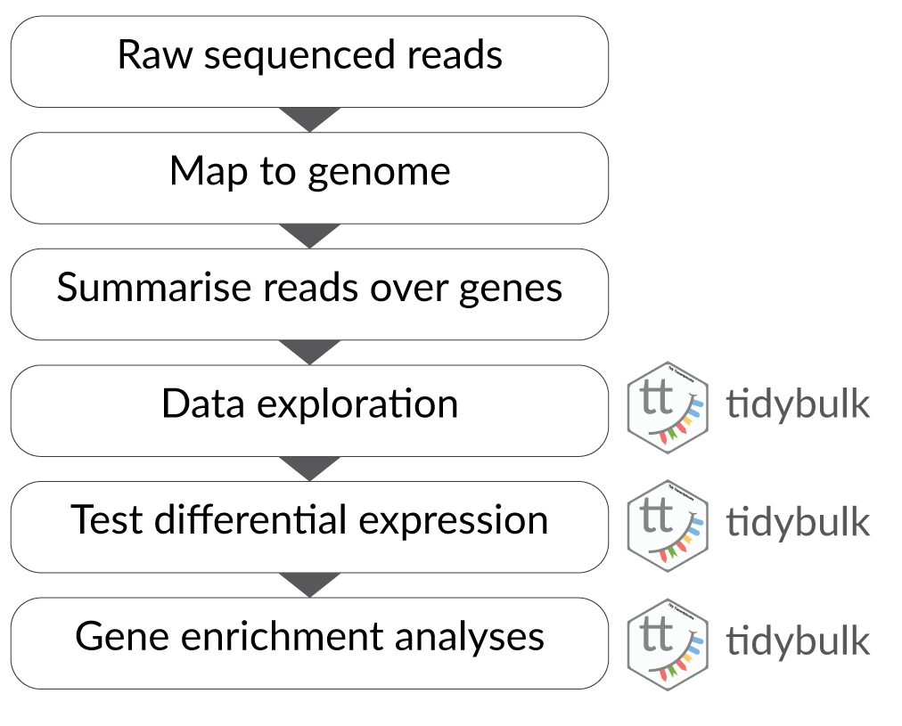
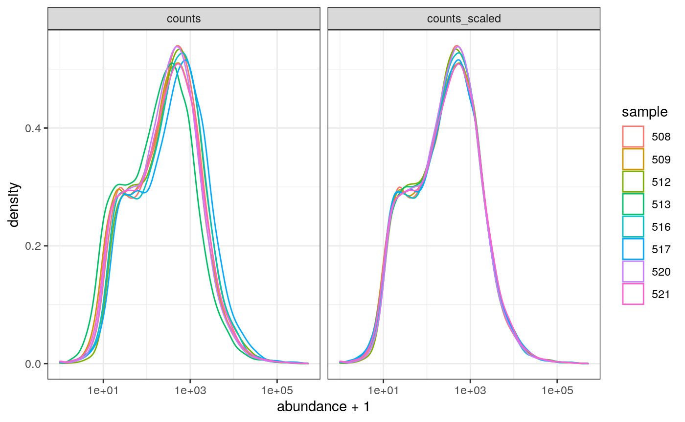
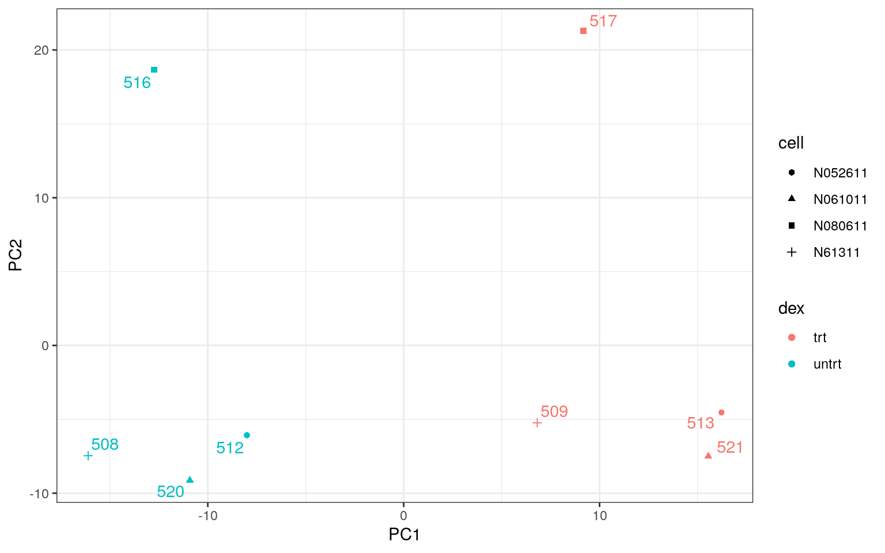
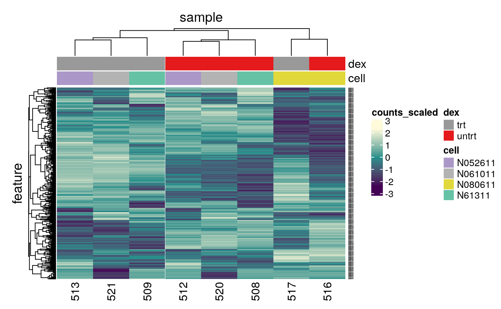
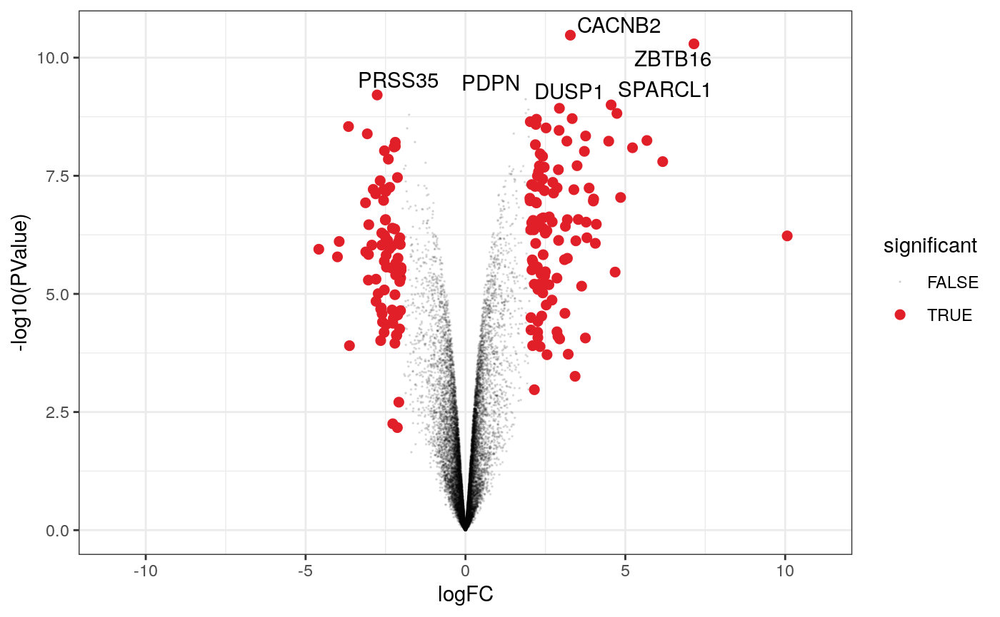
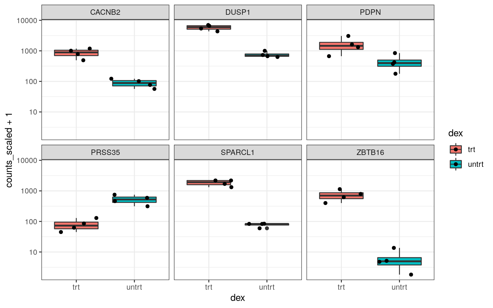

A Tidy Transcriptomics introduction to RNA-Seq analyses
Maria Doyle, Peter MacCallum Cancer Centre1
Stefano Mangiola, Walter and Eliza Hall Institute2
Source:vignettes/tidytranscriptomics.Rmd
tidytranscriptomics.RmdWorkshop Description
This workshop will present how to perform analysis of RNA sequencing data following the tidy data paradigm (Wickham and others 2014). The tidy data paradigm provides a standard way to organise data values within a dataset, where each variable is a column, each observation is a row, and data is manipulated using an easy-to-understand vocabulary. Most importantly, the data structure remains consistent across manipulation and analysis functions.
This can be achieved for RNA sequencing data with the tidybulk, tidyHeatmap and tidyverse (Wickham et al. 2019) packages. The package tidybulk provides a tidy data structure and a modular framework for bulk transcriptional analyses. tidyHeatmap provides a tidy implementation of ComplexHeatmap. These packages are part of the tidytranscriptomics suite that introduces a tidy approach to RNA sequencing data representation and analysis
The topics presented in this workshop will be
- Data exploration
- Data dimensionality reduction and clustering
- Differential gene expression analysis
- Data visualisation
Pre-requisites
- Basic knowledge of RStudio
- Familiarity with tidyverse syntax
Recommended Background Reading Introduction to R for Biologists
Workshop Participation
The workshop length is 55 min. It consists of a 30 min demo followed by 25 min opportunity for attendees to try out the code, exercises and Q&A.
Time outline
| Activity | Time |
|---|---|
| Demo | 30m |
| Introduction and Data preprocessing | |
| Data dimensionality reduction and clustering | |
| Differential gene expression | |
| Data visualisation | |
| Try out code, Exercises, Q&A | 25m |
Workshop goals and objectives
In exploring and analysing RNA sequencing data, there are a number of key concepts, such as filtering, scaling, dimensionality reduction, hypothesis testing, clustering and visualisation, that need to be understood. These concepts can be intuitively explained to new users, however, (i) the use of a heterogeneous vocabulary and jargon by methodologies/algorithms/packages, (ii) the complexity of data wrangling, and (iii) the coding burden, impede effective learning of the statistics and biology underlying an informed analysis.
The tidytranscriptomics approach abstracts out the coding-related complexity and provides tools that use an intuitive and jargon-free vocabulary, enabling focus on the statistical and biological challenges.
Introduction
Measuring gene expression on a genome-wide scale has become common practice over the last two decades or so, with microarrays predominantly used pre-2008. With the advent of next generation sequencing technology in 2008, an increasing number of scientists use this technology to measure and understand changes in gene expression in often complex systems. As sequencing costs have decreased, using RNA sequencing to simultaneously measure the expression of tens of thousands of genes for multiple samples has never been easier. The cost of these experiments has now moved from generating the data to storing and analysing it.
There are many steps involved in analysing an RNA sequencing dataset. The main steps for a differential expression analysis are shown in the figure below. Sequenced reads are aligned to a reference genome, then the number of reads mapped to each gene can be counted. This results in a table of counts, which is what we perform statistical analyses on in R. While mapping and counting are important and necessary tasks, today we will be starting from the count data and showing how differential expression analysis can be performed in a friendly way using tidybulk.

First, let’s load all the packages we will need to analyse the data.
# load libraries # tidyverse core packages library(tibble) library(dplyr) library(tidyr) library(readr) library(stringr) library(ggplot2) # tidyverse-friendly packages library(tidyHeatmap) library(tidybulk) library(ggrepel) library(plotly) # dataset library(airway)
Airway RNA sequencing dataset
Here we will perform our analysis using the data from the airway package. The airway data comes from the paper by (Himes et al. 2014); and it includes 8 samples from human airway smooth muscle cells, from 4 cell lines. For each cell line treated (with dexamethasone) and untreated (negative control) a sample has undergone RNA sequencing and gene counts have been generated.
Setting up the data
The airway data is stored as a RangedSummarizedExperiment object. We can convert a SummarizedExperiment object into a tidybulk tibble, which is the tidyverse table format.
In this workshop we will be using the tidyverse pipe %>%. This ‘pipes’ the output from the command on the left into the command on the right/below. Using the pipe is not essential but it reduces the amount of code we need to write when we have multiple steps (as we’ll see later). It also can make the steps clearer and easier to see. For more details on the pipe see here.
# load airway RNA sequencing data data(airway) # convert to tidybulk format counts_airway <- airway %>% tidybulk()
You can use glimpse to view the columns with their first few entries.
glimpse(counts_airway) #> Rows: 512,816 #> Columns: 12 #> $ feature <fct> ENSG00000000003, ENSG00000000005, ENSG00000000419, ENSG000… #> $ sample <fct> SRR1039508, SRR1039508, SRR1039508, SRR1039508, SRR1039508… #> $ counts <int> 679, 0, 467, 260, 60, 0, 3251, 1433, 519, 394, 172, 2112, … #> $ SampleName <fct> GSM1275862, GSM1275862, GSM1275862, GSM1275862, GSM1275862… #> $ cell <fct> N61311, N61311, N61311, N61311, N61311, N61311, N61311, N6… #> $ dex <fct> untrt, untrt, untrt, untrt, untrt, untrt, untrt, untrt, un… #> $ albut <fct> untrt, untrt, untrt, untrt, untrt, untrt, untrt, untrt, un… #> $ Run <fct> SRR1039508, SRR1039508, SRR1039508, SRR1039508, SRR1039508… #> $ avgLength <int> 126, 126, 126, 126, 126, 126, 126, 126, 126, 126, 126, 126… #> $ Experiment <fct> SRX384345, SRX384345, SRX384345, SRX384345, SRX384345, SRX… #> $ Sample <fct> SRS508568, SRS508568, SRS508568, SRS508568, SRS508568, SRS… #> $ BioSample <fct> SAMN02422669, SAMN02422669, SAMN02422669, SAMN02422669, SA…
The counts_tt object contains information about genes and samples, the first column has the Ensembl gene identifier, the second column has the sample identifier and the third column has the gene transcription abundance expressed in number of reads aligning to the gene in each experimental sample. The remaining columns include sample-wise information. The dex column tells us whether the samples are treated or untreated and the cell column tells us what cell line they are from.
We can shorten the sample names. We can remove the SRR1039 prefix that’s present in all of them, as shorter names can fit better in some of the plots we will create. We can use mutate() together with str_replace() to remove the SRR1039 string from the sample column.
counts_format <- counts_airway %>% mutate(sample=str_remove(sample, "SRR1039"))
Adding gene symbols
We can get the gene symbols for these Ensembl gene ids with tidybulk’s ensembl_to_symbol. This works for human and mouse.
counts_tt <- ensembl_to_symbol(counts_format, feature) counts_tt #> # A tibble: 512,816 x 14 #> feature sample counts SampleName cell dex albut Run avgLength Experiment #> <chr> <chr> <int> <fct> <fct> <fct> <fct> <fct> <int> <fct> #> 1 ENSG00… 508 679 GSM1275862 N613… untrt untrt SRR1… 126 SRX384345 #> 2 ENSG00… 508 0 GSM1275862 N613… untrt untrt SRR1… 126 SRX384345 #> 3 ENSG00… 508 467 GSM1275862 N613… untrt untrt SRR1… 126 SRX384345 #> 4 ENSG00… 508 260 GSM1275862 N613… untrt untrt SRR1… 126 SRX384345 #> 5 ENSG00… 508 60 GSM1275862 N613… untrt untrt SRR1… 126 SRX384345 #> 6 ENSG00… 508 0 GSM1275862 N613… untrt untrt SRR1… 126 SRX384345 #> 7 ENSG00… 508 3251 GSM1275862 N613… untrt untrt SRR1… 126 SRX384345 #> 8 ENSG00… 508 1433 GSM1275862 N613… untrt untrt SRR1… 126 SRX384345 #> 9 ENSG00… 508 519 GSM1275862 N613… untrt untrt SRR1… 126 SRX384345 #> 10 ENSG00… 508 394 GSM1275862 N613… untrt untrt SRR1… 126 SRX384345 #> # … with 512,806 more rows, and 4 more variables: Sample <fct>, #> # BioSample <fct>, transcript <chr>, ref_genome <chr>
With tidyverse, all above operations can be linked with the %>%, as shown below. This has the benefits that
- no temporary variables need to be created
- less typing is required
- the steps can be seen more clearly.
counts_tt <- airway %>% tidybulk() %>% mutate(sample=str_remove(sample, "SRR1039")) %>% ensembl_to_symbol(feature)
From this tidybulk tibble, we can perform differential expression analysis with the tidybulk package.
Filtering lowly expressed genes
Genes with very low counts across all libraries provide little evidence for differential expression and they interfere with some of the statistical approximations that are used later in the pipeline. They also add to the multiple testing burden when estimating false discovery rates, reducing power to detect differentially expressed genes. These genes should be filtered out prior to further analysis.
With tidybulk, it is not really necessary to explicitly filter lowly transcribed genes, as all calculations (e.g., scaling, removal of unwanted variation, differential expression testing) are performed on abundantly transcribed genes; although in case of scaling, the scaling is applied back to all genes in the dataset. Tidybulk can use the edgeR filterByExpr function described in (Law et al. 2016). By default, this will keep genes with ~10 counts in a minimum number of samples, the number of the samples in the smallest group. In this dataset the smallest group size is four (as we have four dex-treated samples vs four untreated). tidybulk performs this filtering in the functions we will use scale_abundance and test_differential_abundance.
Scaling counts to normalise
Scaling of counts, normalisation, is performed to eliminate uninteresting differences between samples due to sequencing depth or composition. In the tidybulk package the function scale_abundance generates scaled counts, with scaling factors calculated on abundant (filtered) transcripts and applied to all transcripts. We can choose from different normalisation methods. Here we will use the default, TMM, [robinson2010scaling]. TMM normalisation (and most scaling normalisation methods) scale relative to one sample. We use factor_of_interest to specify the column containing the groups for the filtering described above.
# Scaling counts counts_scaled <- counts_tt %>% scale_abundance(factor_of_interest = dex) # take a look glimpse(counts_scaled) #> Rows: 512,816 #> Columns: 18 #> $ feature <chr> "ENSG00000000003", "ENSG00000000005", "ENSG00000000419… #> $ sample <chr> "508", "508", "508", "508", "508", "508", "508", "508"… #> $ counts <int> 679, 0, 467, 260, 60, 0, 3251, 1433, 519, 394, 172, 21… #> $ SampleName <fct> GSM1275862, GSM1275862, GSM1275862, GSM1275862, GSM127… #> $ cell <fct> N61311, N61311, N61311, N61311, N61311, N61311, N61311… #> $ dex <fct> untrt, untrt, untrt, untrt, untrt, untrt, untrt, untrt… #> $ albut <fct> untrt, untrt, untrt, untrt, untrt, untrt, untrt, untrt… #> $ Run <fct> SRR1039508, SRR1039508, SRR1039508, SRR1039508, SRR103… #> $ avgLength <int> 126, 126, 126, 126, 126, 126, 126, 126, 126, 126, 126,… #> $ Experiment <fct> SRX384345, SRX384345, SRX384345, SRX384345, SRX384345,… #> $ Sample <fct> SRS508568, SRS508568, SRS508568, SRS508568, SRS508568,… #> $ BioSample <fct> SAMN02422669, SAMN02422669, SAMN02422669, SAMN02422669… #> $ transcript <chr> "TSPAN6", "TNMD", "DPM1", "SCYL3", "C1orf112", "FGR", … #> $ ref_genome <chr> "hg38", "hg38", "hg38", "hg38", "hg38", "hg38", "hg38"… #> $ counts_scaled <dbl> 642.996349, 0.000000, 442.237548, 246.213624, 56.81852… #> $ TMM <dbl> 1.057509, 1.057509, 1.057509, 1.057509, 1.057509, 1.05… #> $ multiplier <dbl> 0.9469755, 0.9469755, 0.9469755, 0.9469755, 0.9469755,… #> $ lowly_abundant <lgl> FALSE, TRUE, FALSE, FALSE, FALSE, TRUE, FALSE, FALSE, …
After we run scale_abundance we should see some columns have been added at the end. We have a column called lowly_abundant that indicates whether the gene has been filtered due to being lowly expressed. FALSE means the gene was not filtered, TRUE means it was. The counts_scaled column contains the scaled counts.
We can now see the difference of abundance densities before and after scaling.
counts_scaled %>% filter(!lowly_abundant) %>% pivot_longer(cols = c("counts", "counts_scaled"), names_to = "source", values_to = "abundance") %>% ggplot(aes(x=abundance + 1, color=sample)) + geom_density() + facet_wrap(~source) + scale_x_log10() + theme_bw()

In this dataset the distributions of the counts are not very different to each other before scaling but scaling does make the distributions more similar. If we saw a sample with a very different distribution we may need to investigate it.
As tidybulk smoothly integrates with ggplot2 and other tidyverse packages it can save on typing and make plots easier to generate. Compare the code for creating density plots with tidybulk versus standard base R below (standard code adapted from (Law et al. 2016)).
tidybulk
# tidybulk airway %>% tidybulk() %>% scale_abundance() %>% pivot_longer(cols = c("counts", "counts_scaled"), names_to = "source", values_to = "abundance") %>% filter(!lowly_abundant) %>% ggplot(aes(x=abundance + 1, color=sample)) + geom_density() + facet_wrap(~source) + scale_x_log10() + theme_bw()
base R using edgeR
# Example code, no need to run # Prepare data set dgList <- SE2DGEList(airway) group <- factor(dgList$samples$dex) keep.exprs <- filterByExpr(dgList, group=group) dgList <- dgList[keep.exprs,, keep.lib.sizes=FALSE] nsamples <- ncol(dgList) logcounts <- log2(dgList$counts) # Setup graphics col <- RColorBrewer::brewer.pal(nsamples, "Paired") par(mfrow=c(1,2)) # Plot raw counts plot(density(logcounts[,1]), col=col[1], lwd=2, ylim=c(0,0.26), las=2, main="", xlab="") title(main="Counts") for (i in 2:nsamples){ den <- density(logcounts[,i]) lines(den$x, den$y, col=col[i], lwd=2) } legend("topright", legend=dgList$samples$Run, text.col=col, bty="n") # Plot scaled counts dgList_norm <- calcNormFactors(dgList) lcpm_n <- cpm(dgList_norm, log=TRUE) plot(density(lcpm_n[,1]), col=col[1], lwd=2, ylim=c(0,0.26), las=2, main="", xlab="") title("Counts scaled") for (i in 2:nsamples){ den <- density(lcpm_n[,i]) lines(den$x, den$y, col=col[i], lwd=2) } legend("topright", legend=dgList_norm$samples$Run, text.col=col, bty="n")
Exploratory analyses
Dimensionality reduction
By far, one of the most important plots we make when we analyse RNA sequencing data are principal-component analysis (PCA) or multi-dimensional scaling (MDS) plots. We reduce the dimensions of the data to identify the greatest sources of variation in the data. A principal components analysis is an example of an unsupervised analysis, where we don’t need to specify the groups. If your experiment is well controlled and has worked well, what we hope to see is that the greatest sources of variation in the data are the treatments/groups we are interested in. It is also an incredibly useful tool for quality control and checking for outliers. We can use the reduce_dimensions function to calculate the dimensions.
# Get principal components counts_scal_PCA <- counts_scaled %>% reduce_dimensions(method="PCA") #> Getting the 500 most variable genes #> Fraction of variance explained by the selected principal components #> # A tibble: 2 x 2 #> `Fraction of variance` PC #> <dbl> <int> #> 1 0.355 1 #> 2 0.309 2 #> tidybulk says: to access the raw results do `attr(..., "internals")$PCA`
This joins the result to the counts object.
# Take a look counts_scal_PCA #> # A tibble: 512,816 x 20 #> feature sample counts SampleName cell dex albut Run avgLength Experiment #> <chr> <chr> <int> <fct> <fct> <fct> <fct> <fct> <int> <fct> #> 1 ENSG00… 508 679 GSM1275862 N613… untrt untrt SRR1… 126 SRX384345 #> 2 ENSG00… 508 0 GSM1275862 N613… untrt untrt SRR1… 126 SRX384345 #> 3 ENSG00… 508 467 GSM1275862 N613… untrt untrt SRR1… 126 SRX384345 #> 4 ENSG00… 508 260 GSM1275862 N613… untrt untrt SRR1… 126 SRX384345 #> 5 ENSG00… 508 60 GSM1275862 N613… untrt untrt SRR1… 126 SRX384345 #> 6 ENSG00… 508 0 GSM1275862 N613… untrt untrt SRR1… 126 SRX384345 #> 7 ENSG00… 508 3251 GSM1275862 N613… untrt untrt SRR1… 126 SRX384345 #> 8 ENSG00… 508 1433 GSM1275862 N613… untrt untrt SRR1… 126 SRX384345 #> 9 ENSG00… 508 519 GSM1275862 N613… untrt untrt SRR1… 126 SRX384345 #> 10 ENSG00… 508 394 GSM1275862 N613… untrt untrt SRR1… 126 SRX384345 #> # … with 512,806 more rows, and 10 more variables: Sample <fct>, #> # BioSample <fct>, transcript <chr>, ref_genome <chr>, counts_scaled <dbl>, #> # TMM <dbl>, multiplier <dbl>, lowly_abundant <lgl>, PC1 <dbl>, PC2 <dbl>
For plotting, we can select just the sample-wise information with pivot_sample.
# take a look counts_scal_PCA %>% pivot_sample() #> # A tibble: 8 x 14 #> sample SampleName cell dex albut Run avgLength Experiment Sample #> <chr> <fct> <fct> <fct> <fct> <fct> <int> <fct> <fct> #> 1 508 GSM1275862 N613… untrt untrt SRR1… 126 SRX384345 SRS50… #> 2 509 GSM1275863 N613… trt untrt SRR1… 126 SRX384346 SRS50… #> 3 512 GSM1275866 N052… untrt untrt SRR1… 126 SRX384349 SRS50… #> 4 513 GSM1275867 N052… trt untrt SRR1… 87 SRX384350 SRS50… #> 5 516 GSM1275870 N080… untrt untrt SRR1… 120 SRX384353 SRS50… #> 6 517 GSM1275871 N080… trt untrt SRR1… 126 SRX384354 SRS50… #> 7 520 GSM1275874 N061… untrt untrt SRR1… 101 SRX384357 SRS50… #> 8 521 GSM1275875 N061… trt untrt SRR1… 98 SRX384358 SRS50… #> # … with 5 more variables: BioSample <fct>, TMM <dbl>, multiplier <dbl>, #> # PC1 <dbl>, PC2 <dbl>
We can now plot the reduced dimensions.
# PCA plot counts_scal_PCA %>% pivot_sample() %>% ggplot(aes(x=PC1, y=PC2, colour=dex, shape=cell)) + geom_point() + geom_text_repel(aes(label=sample), show.legend = FALSE) + theme_bw()

The samples separate by treatment on PC1 which is what we hope to see. PC2 separates the N080611 cell line from the other samples, indicating a greater difference between that cell line and the others.
Hierarchical clustering with heatmaps
An alternative to principal component analysis for examining relationships between samples is using hierarchical clustering. Heatmaps are a nice visualisation to examine hierarchical clustering of your samples. tidybulk has a simple function we can use, keep_variable, to extract the most variable genes which we can then plot with tidyHeatmap.
counts_scaled %>% # filter lowly abundant filter(!lowly_abundant) %>% # extract 500 most variable genes keep_variable( .abundance = counts_scaled, top = 500) %>% # create heatmap heatmap( .column = sample, .row = feature, .value = counts_scaled, annotation = c(dex, cell), transform = log1p ) #> Getting the 500 most variable genes

In the heatmap we can see the samples cluster into two groups, treated and untreated, for three of the cell lines, and the cell line (N080611) again is further away from the others.
Tidybulk enables a simplified way of generating a clustered heatmap of variable genes. Compare the code below for tidybulk versus a base R method.
base R using edgeR
# Example code, no need to run dgList <- SE2DGEList(airway) group <- factor(dgList$samples$dex) keep.exprs <- filterByExpr(dgList, group=group) dgList <- dgList[keep.exprs,, keep.lib.sizes=FALSE] dgList <- calcNormFactors(dgList) logcounts <- cpm(dgList, log=TRUE) var_genes <- apply(logcounts, 1, var) select_var <- names(sort(var_genes, decreasing=TRUE))[1:500] highly_variable_lcpm <- logcounts[select_var,] colours <- c("#440154FF", "#21908CFF", "#fefada" ) col.group <- c("red","grey")[group] gplots::heatmap.2(highly_variable_lcpm, col=colours, trace="none", ColSideColors=col.group, scale="row")
Differential expression
Now that we are happy that the data looks good, we can continue to testing for differentially expressed (DE) genes. We will use the test_differential_abundance from tidybulk which currently uses edgeR (Robinson, McCarthy, and Smyth 2010) to perform the differential expression analysis. We give test_differential_abundance our tidybulk counts object and a formula, specifying the column that contains our groups to be compared. If all our samples were from the same cell line we could use the formula 0 + dex, however, each treated and untreated sample is from a different cell line so we add the cell line as an additional factor 0 + dex + cell. We also provide the names of the groups we want to compare to .contrasts (e.g. .contrasts = c("dextreat - dexuntreat")). test_differential_abundance will perform the filtering of lowly expressed genes as described before.
We only have one contrast here so we omit the suffix.
counts_de <- counts_tt %>% test_differential_abundance( .formula = ~ 0 + dex + cell, .contrasts = c("dextrt - dexuntrt"), omit_contrast_in_colnames = TRUE ) #> tidybulk says: The design column names are "dextrt, dexuntrt, cellN061011, cellN080611, cellN61311" #> tidybulk says: to access the raw results (fitted GLM) do `attr(..., "internals")$edgeR`
The results will be joined to our counts for every sample.
# take a look counts_de #> # A tibble: 512,816 x 21 #> feature sample counts SampleName cell dex albut Run avgLength Experiment #> <chr> <chr> <int> <fct> <fct> <fct> <fct> <fct> <int> <fct> #> 1 ENSG00… 508 679 GSM1275862 N613… untrt untrt SRR1… 126 SRX384345 #> 2 ENSG00… 508 0 GSM1275862 N613… untrt untrt SRR1… 126 SRX384345 #> 3 ENSG00… 508 467 GSM1275862 N613… untrt untrt SRR1… 126 SRX384345 #> 4 ENSG00… 508 260 GSM1275862 N613… untrt untrt SRR1… 126 SRX384345 #> 5 ENSG00… 508 60 GSM1275862 N613… untrt untrt SRR1… 126 SRX384345 #> 6 ENSG00… 508 0 GSM1275862 N613… untrt untrt SRR1… 126 SRX384345 #> 7 ENSG00… 508 3251 GSM1275862 N613… untrt untrt SRR1… 126 SRX384345 #> 8 ENSG00… 508 1433 GSM1275862 N613… untrt untrt SRR1… 126 SRX384345 #> 9 ENSG00… 508 519 GSM1275862 N613… untrt untrt SRR1… 126 SRX384345 #> 10 ENSG00… 508 394 GSM1275862 N613… untrt untrt SRR1… 126 SRX384345 #> # … with 512,806 more rows, and 11 more variables: Sample <fct>, #> # BioSample <fct>, transcript <chr>, ref_genome <chr>, logFC <dbl>, #> # logCPM <dbl>, F <dbl>, PValue <dbl>, FDR <dbl>, significant <lgl>, #> # lowly_abundant <lgl>
If we just want a table of differentially expressed genes we can select the transcript-wise information with pivot_transcript.
# take a look counts_de %>% pivot_transcript() #> # A tibble: 64,102 x 11 #> feature albut transcript ref_genome logFC logCPM F PValue FDR #> <chr> <fct> <chr> <chr> <dbl> <dbl> <dbl> <dbl> <dbl> #> 1 ENSG00… untrt TSPAN6 hg38 -0.390 5.06 32.8 3.12e-4 0.00283 #> 2 ENSG00… untrt TNMD hg38 NA NA NA NA NA #> 3 ENSG00… untrt DPM1 hg38 0.198 4.61 6.90 2.81e-2 0.0770 #> 4 ENSG00… untrt SCYL3 hg38 0.0292 3.48 0.0969 7.63e-1 0.844 #> 5 ENSG00… untrt C1orf112 hg38 -0.124 1.47 0.377 5.55e-1 0.682 #> 6 ENSG00… untrt FGR hg38 NA NA NA NA NA #> 7 ENSG00… untrt CFH hg38 0.417 8.09 29.3 4.63e-4 0.00376 #> 8 ENSG00… untrt FUCA2 hg38 -0.250 5.91 14.9 4.05e-3 0.0186 #> 9 ENSG00… untrt GCLC hg38 -0.0581 4.84 0.167 6.92e-1 0.794 #> 10 ENSG00… untrt NFYA hg38 -0.509 4.13 44.9 1.00e-4 0.00126 #> # … with 64,092 more rows, and 2 more variables: significant <lgl>, #> # lowly_abundant <lgl>
Now we have columns with our log-fold change (logFC), false-discovery rate (FDR) and probability value (p-value). There is also a column called significant that indicates if the gene has false-discovery rate < 0.05.
Tidybulk enables a simplified way of performing an RNA sequencing differential expression analysis (with the benefit of smoothly integrating with ggplot2 and other tidyverse packages). Compare the code for a tidybulk edgeR analysis versus standard edgeR below.
standard edgeR
# Example code, no need to run dgList <- SE2DGEList(airway) group <- factor(dgList$samples$dex) keep.exprs <- filterByExpr(dgList, group=group) dgList <- dgList[keep.exprs,, keep.lib.sizes=FALSE] dgList <- calcNormFactors(dgList) cell <- factor(dgList$samples$cell) design <- model.matrix(~ 0 + group + cell) dgList <- estimateDisp(dgList, design) fit <- glmQLFit(dgList, design) TvsU <- makeContrasts(TvsU=grouptrt-groupuntrt, levels=design) qlf <- glmQLFTest(fit, contrast=TvsU)
Table of differentially expressed genes
We can write out our differentially expressed genes to a file that can be loaded into e.g. Excel. write_tsv will create a tab-separated file.
# save results counts_de %>% pivot_transcript() %>% write_tsv("de_results.tsv")
Counting differentially expressed genes
We can count how many differentially expressed genes there are using the significant column.
counts_de %>% filter(significant == TRUE) %>% summarise(num_de = n_distinct(transcript)) #> # A tibble: 1 x 1 #> num_de #> <int> #> 1 4739
Extracting top differentially expressed genes
We can see the top genes by smallest p-value. We’ll take a look at the top 6.
topgenes <- counts_de %>% pivot_transcript() %>% arrange(PValue) %>% head(6) topgenes #> # A tibble: 6 x 11 #> feature albut transcript ref_genome logFC logCPM F PValue FDR #> <chr> <fct> <chr> <chr> <dbl> <dbl> <dbl> <dbl> <dbl> #> 1 ENSG00… untrt CACNB2 hg38 3.28 4.51 1575. 3.34e-11 4.07e-7 #> 2 ENSG00… untrt ZBTB16 hg38 7.15 4.15 1429. 5.11e-11 4.07e-7 #> 3 ENSG00… untrt PRSS35 hg38 -2.76 3.91 807. 6.16e-10 2.57e-6 #> 4 ENSG00… untrt PDPN hg38 1.88 5.68 768. 7.60e-10 2.57e-6 #> 5 ENSG00… untrt SPARCL1 hg38 4.56 5.53 721. 1.00e- 9 2.57e-6 #> 6 ENSG00… untrt DUSP1 hg38 2.94 7.31 694. 1.18e- 9 2.57e-6 #> # … with 2 more variables: significant <lgl>, lowly_abundant <lgl>
We can extract the symbols for these top genes to use in some of the plots we will make.
topgenes_symbols <- topgenes %>% pull(transcript) # take a look topgenes_symbols #> [1] "CACNB2" "ZBTB16" "PRSS35" "PDPN" "SPARCL1" "DUSP1"
Plots after testing for differentially expressed
Volcano plots
Volcano plots are a useful genome-wide plot for checking that the analysis looks good. Volcano plots enable us to visualise the significance of change (p-value) versus the fold change (logFC). Highly significant genes are towards the top of the plot. We can also colour significant genes (e.g. genes with false-discovery rate < 0.05)
# volcano plot, minimal counts_de %>% filter(!lowly_abundant) %>% ggplot(aes(x=logFC, y=PValue, colour=significant)) + geom_point() + scale_y_continuous(trans = "log10_reverse") + theme_bw()

A more informative plot, integrating some of the packages in tidyverse.
counts_de %>% pivot_transcript() %>% # Subset data filter(!lowly_abundant) %>% mutate(significant = FDR<0.05 & abs(logFC) >=2) %>% mutate(transcript = ifelse(transcript %in% topgenes_symbols, as.character(transcript), "")) %>% # Plot ggplot(aes(x = logFC, y = PValue, label=transcript)) + geom_point(aes(color = significant, size = significant, alpha=significant)) + geom_text_repel() + # Custom scales scale_y_continuous(trans = "log10_reverse") + scale_color_manual(values=c("black", "#e11f28")) + scale_size_discrete(range = c(0, 2)) + theme_bw()

Stripcharts
Before following up on the differentially expressed genes with further lab work, it is also recommended to have a look at the expression levels of the individual samples for the genes of interest. We can use stripcharts to do this. These will help show if expression is consistent amongst replicates in the groups.
With stripcharts we can see if replicates tend to group together and how the expression compares to the other groups. We’ll also add a box plot to show the distribution.
strip_chart <- counts_scaled %>% # extract counts for top differentially expressed genes filter(transcript %in% topgenes_symbols) %>% # make stripchart ggplot(aes(x = dex, y = counts_scaled + 1, fill = dex, label = sample)) + geom_boxplot() + geom_jitter() + facet_wrap(~transcript) + scale_y_log10()+ theme_bw() strip_chart

Interactive Plots
A really nice feature of using tidyverse and ggplot2 is that we can make interactive plots quite easily using the plotly package. This can be very useful for exploring what genes or samples are in the plots. We can make interactive plots directly from our ggplot2 object (strip_chart). Having label into the aes is useful to visualise the identified of the data point or other variables to be visible when we hover over the plot.
We can also specify which parameters from the aes we want to show up when we hover over the plot with tooltip.
Key Points
- RNA sequencing data can be represented and analysed in a ‘tidy’ way using tidybulk and the tidyverse
- With the modularity offered by piping we don’t need to create variables, unless an object is used more than one. This improves robustness of the code.
- The principles of tidy transcriptomics are to interface as much as possible with commonly known manipulation and visualisation tools, rather than creating custom functions.
- Some of the key steps in an RNA sequencing analysis are (i) filtering lowly abundant transcripts, (ii) adjusting for differences in sequencing depth and composition, (iii) testing for differential expression
- Dimensionality reduction (PCA or MDS) plots are very important for exploring the data
- Density plots, volcano plots, strip-charts and heatmaps are useful visualisation tools for evaluating the hypothesis testing.
Exercises
Try to apply what you’ve learned to another dataset. This dataset was generated from the pasilla package, which obtained the data from the paper by (Brooks et al. 2011). Here we provide it as a SummarizedExperiment object. The dataset has 7 samples from Drosophila (fruitfly): 3 treated with siRNA knockdown of the pasilla gene and 4 untreated controls. Load the data and create the tidybulk object with:
Note that as this is fly data you can’t use ensembl_to_symbol to get gene symbols, just work with the gene ids.
Questions:
1. What is the Fraction of Variance for PC1 and PC2? What do PC1 and PC2 represent?
2. How many differentially expressed genes are there for treated vs untreated (false discovery rate < 0.05)? What is the top differentially expressed gene by p-value? 3. What code can generate a heatmap of variable genes (starting from count_scaled)?
4. What code can you use to visualise expression of the pasilla gene (gene id: FBgn0261552)
5. What code can generate an interactive volcano plot that has gene ids showing on hover?
6. What code can generate a heatmap of the top 100 differentially expressed genes?
Contributing
If you want to suggest improvements for this workshop or ask questions, you can do so as described here.
Reproducibility
Record package and version information with sessionInfo
sessionInfo() #> R version 4.0.0 (2020-04-24) #> Platform: x86_64-pc-linux-gnu (64-bit) #> Running under: Ubuntu 18.04.4 LTS #> #> Matrix products: default #> BLAS/LAPACK: /usr/lib/x86_64-linux-gnu/libopenblasp-r0.2.20.so #> #> locale: #> [1] LC_CTYPE=en_US.UTF-8 LC_NUMERIC=C #> [3] LC_TIME=en_US.UTF-8 LC_COLLATE=en_US.UTF-8 #> [5] LC_MONETARY=en_US.UTF-8 LC_MESSAGES=C #> [7] LC_PAPER=en_US.UTF-8 LC_NAME=C #> [9] LC_ADDRESS=C LC_TELEPHONE=C #> [11] LC_MEASUREMENT=en_US.UTF-8 LC_IDENTIFICATION=C #> #> attached base packages: #> [1] parallel stats4 grid stats graphics grDevices utils #> [8] datasets methods base #> #> other attached packages: #> [1] airway_1.9.0 SummarizedExperiment_1.19.6 #> [3] DelayedArray_0.15.7 matrixStats_0.56.0 #> [5] Matrix_1.2-18 Biobase_2.49.0 #> [7] GenomicRanges_1.41.5 GenomeInfoDb_1.25.8 #> [9] IRanges_2.23.10 S4Vectors_0.27.12 #> [11] BiocGenerics_0.35.4 plotly_4.9.2.1 #> [13] ggrepel_0.8.2 tidybulk_1.1.5 #> [15] tidyHeatmap_1.0.1 ComplexHeatmap_2.5.3 #> [17] ggplot2_3.3.2 stringr_1.4.0 #> [19] readr_1.3.1 tidyr_1.1.0 #> [21] dplyr_1.0.0 tibble_3.0.3 #> #> loaded via a namespace (and not attached): #> [1] viridis_0.5.1 httr_1.4.2 edgeR_3.31.4 #> [4] splines_4.0.0 jsonlite_1.7.0 viridisLite_0.3.0 #> [7] assertthat_0.2.1 GenomeInfoDbData_1.2.3 yaml_2.2.1 #> [10] pillar_1.4.6 backports_1.1.8 lattice_0.20-41 #> [13] limma_3.45.9 glue_1.4.1 digest_0.6.25 #> [16] RColorBrewer_1.1-2 XVector_0.29.3 colorspace_1.4-1 #> [19] htmltools_0.5.0 preprocessCore_1.51.0 pkgconfig_2.0.3 #> [22] GetoptLong_1.0.2 zlibbioc_1.35.0 purrr_0.3.4 #> [25] scales_1.1.1 farver_2.0.3 generics_0.0.2 #> [28] ellipsis_0.3.1 withr_2.2.0 lazyeval_0.2.2 #> [31] cli_2.0.2 magrittr_1.5 crayon_1.3.4 #> [34] memoise_1.1.0 evaluate_0.14 fansi_0.4.1 #> [37] fs_1.4.2 MASS_7.3-51.6 tools_4.0.0 #> [40] data.table_1.13.0 hms_0.5.3 GlobalOptions_0.1.2 #> [43] lifecycle_0.2.0 locfit_1.5-9.4 munsell_0.5.0 #> [46] cluster_2.1.0 compiler_4.0.0 pkgdown_1.5.1 #> [49] rlang_0.4.7 RCurl_1.98-1.2 rjson_0.2.20 #> [52] htmlwidgets_1.5.1 circlize_0.4.10 crosstalk_1.1.0.1 #> [55] labeling_0.3 bitops_1.0-6 rmarkdown_2.3 #> [58] gtable_0.3.0 R6_2.4.1 gridExtra_2.3 #> [61] knitr_1.29 utf8_1.1.4 clue_0.3-57 #> [64] rprojroot_1.3-2 shape_1.4.4 desc_1.2.0 #> [67] stringi_1.4.6 Rcpp_1.0.5 vctrs_0.3.2 #> [70] png_0.1-7 tidyselect_1.1.0 xfun_0.16
References
Brooks, Angela N, Li Yang, Michael O Duff, Kasper D Hansen, Jung W Park, Sandrine Dudoit, Steven E Brenner, and Brenton R Graveley. 2011. “Conservation of an Rna Regulatory Map Between Drosophila and Mammals.” Genome Research 21 (2): 193–202.
Himes, Blanca E, Xiaofeng Jiang, Peter Wagner, Ruoxi Hu, Qiyu Wang, Barbara Klanderman, Reid M Whitaker, et al. 2014. “RNA-Seq Transcriptome Profiling Identifies Crispld2 as a Glucocorticoid Responsive Gene That Modulates Cytokine Function in Airway Smooth Muscle Cells.” PloS One 9 (6): e99625.
Law, Charity W, Monther Alhamdoosh, Shian Su, Xueyi Dong, Luyi Tian, Gordon K Smyth, and Matthew E Ritchie. 2016. “RNA-Seq Analysis Is Easy as 1-2-3 with Limma, Glimma and edgeR.” F1000Research 5.
Robinson, Mark D, Davis J McCarthy, and Gordon K Smyth. 2010. “EdgeR: A Bioconductor Package for Differential Expression Analysis of Digital Gene Expression Data.” Bioinformatics 26 (1): 139–40.
Wickham, Hadley, Mara Averick, Jennifer Bryan, Winston Chang, Lucy D’Agostino McGowan, Romain François, Garrett Grolemund, et al. 2019. “Welcome to the Tidyverse.” Journal of Open Source Software 4 (43): 1686.
Wickham, Hadley, and others. 2014. “Tidy Data.” Journal of Statistical Software 59 (10): 1–23.